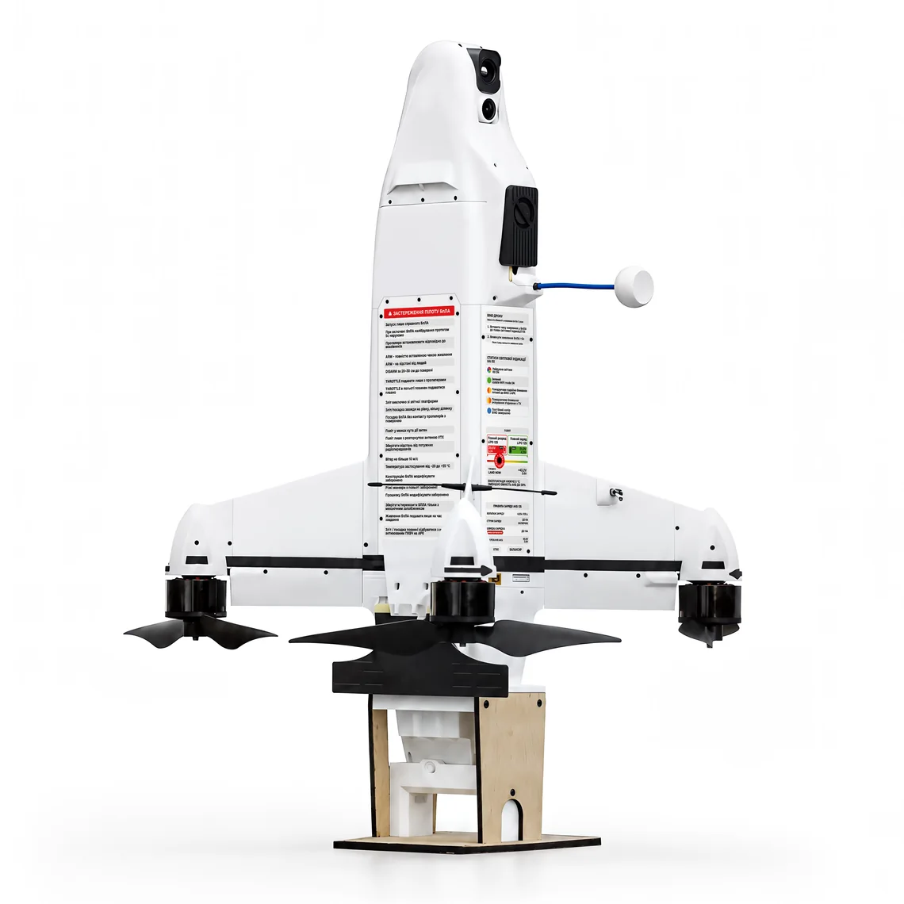

Design concept v2
WIY Drones website aligned with the Quantum Systems Group identity. This page documents the concept for approval and is the reference for the CMS build.
Group identity, WIY voice
Product as hero
Full-screen field photography and studio shots carry the page. Interface stays quiet: monochrome, thin lines, no decoration.
Navigation by domain
Like QS (Air · Land · Sea · cUAS), WIY is organised by mission domain: cUAS · ISR · Strike · GCS & Software, with product mega-menus.
Facts, large
Key specifications are shown as oversized numbers, details live in accordions and spec tables — scannable for procurement and operators.
Part of the Group
“A company of Quantum Systems” in footer, a Group banner on home and company pages, shared typeface and colour system.
Trust and verification
NATO NCAGE, NSN, ISO and partner logos are visible; the contact form explains the wartime verification requirement.
One content model
Every product follows one template driven by structured data — ready to map to a CMS post type.
Quantum Systems palette
From the QS brand portal. Interface is 98% black and white; Governmental Olive is the defence accent and is used only as a micro-marker (kicker squares, status dots, focus states). Commercial Blue is not used on WIY.
Montserrat
QS corporate typeface. Headlines in Regular 400 with tight tracking — light and technical rather than heavy and “military”. Sentence case everywhere; no all-caps headlines.
A high-speed interceptor UAV built to defeat fast, highly manoeuvrable aerial targets.
Protected communication channels and in-flight frequency switching support stable control under active jamming.
Interface elements
Operation mode
Reusability
Two photo modes
Field: real deployment, natural light, cool tones, people as context not heroes. Studio: product on pure white, used for cards, mega-menu and light hero slides. No stock “military” clichés, no illustrations of explosions on main pages.

Field photography
Full-bleed, gradient for legibility

Studio cut-out
White / Gray 50 background